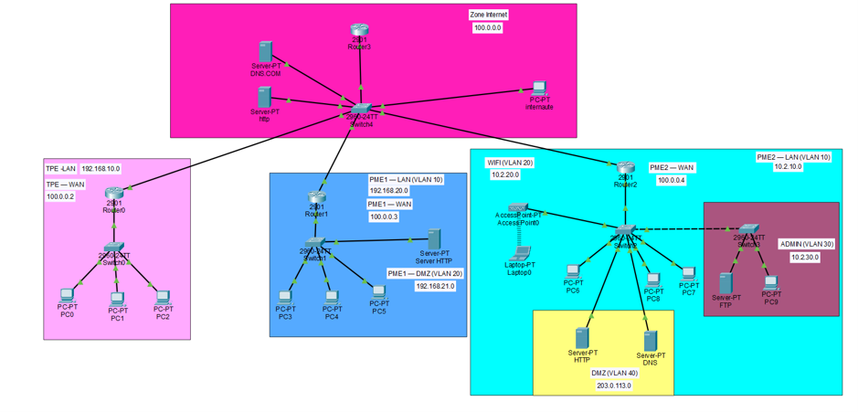
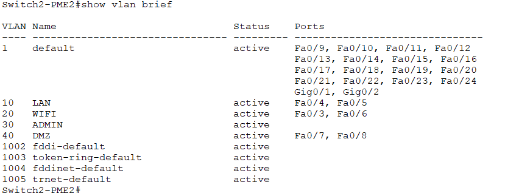
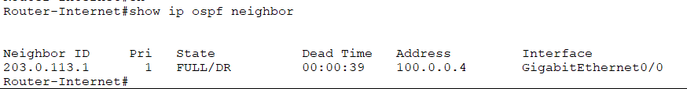
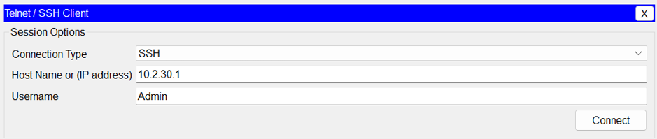

Conception et configuration d'un réseau d'entreprise
Ce projet a été réalisé pendant ma première année de BUT Réseaux et Télécommunications. Il avait pour objectif de concevoir et de configurer une infrastructure réseau d'entreprise à l'aide de Cisco Packet Tracer.
Objectifs du projet
J'ai travaillé sur l'organisation d'un réseau composé de plusieurs sous-réseaux, avec des VLAN pour séparer les différents services et des routeurs pour permettre la communication entre les réseaux.
Travaux réalisés
- Conception d'une topologie réseau
- Configuration des VLAN et affectation des ports
- Adressage IP et segmentation du réseau
- Configuration et vérification du routage OSPF
- Préparation d'un accès distant sécurisé en SSH
- Organisation des réseaux LAN, WAN et DMZ
Captures du projet




Compétences développées
Ce projet m'a permis de découvrir la configuration des équipements réseau, de mieux comprendre la segmentation d'un réseau d'entreprise et de pratiquer des commandes Cisco pour vérifier les configurations. Je souhaite continuer à approfondir ces compétences dans le cadre de mon BTS SIO, option SISR.